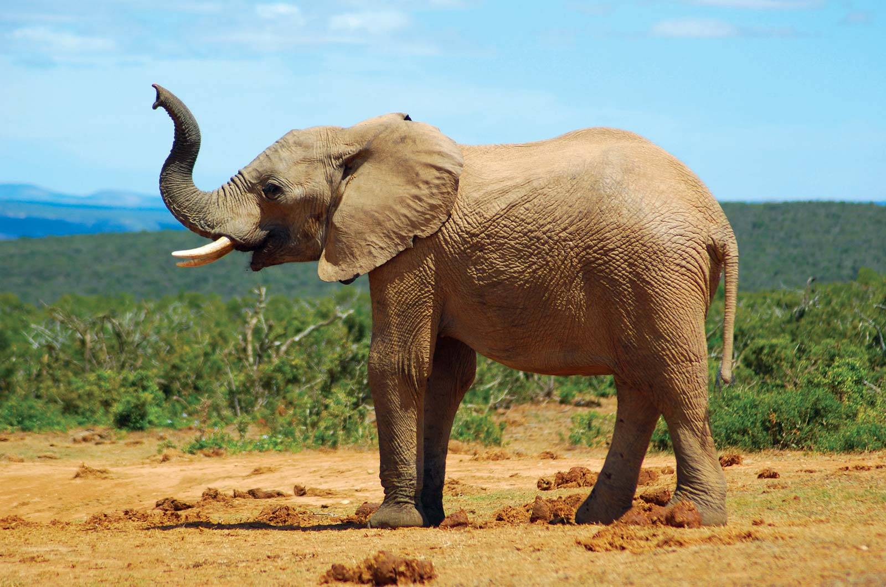

About Elephant

Elephant, (family Elephantidae), largest living land animal, characterized by its long trunk (elongated upper lip and nose), columnar legs, and huge head with temporal glands and wide, flat ears. Elephants are grayish to brown in colour, and their body hair is sparse and coarse. They are found most often in savannas, grasslands, and forests but occupy a wide range of habitats, including deserts, swamps, and highlands in tropical and subtropical regions of Africa and Asia.
The trunk (proboscis)
The trunk, or proboscis, of the elephant is one of the most versatile organs to have evolved among mammals. This structure is unique to members of the order Proboscidea, which includes the extinct mastodons and mammoths. Anatomically, the trunk is a combination of the upper lip and nose; the nostrils are located at the tip. The trunk is large and powerful, weighing about 130 kg (290 pounds) in an adult male and capable of lifting a load of about 250 kg. However, it is also extremely dexterous, mobile, and sensitive, which makes it appear almost independent of the rest of the animal. The proboscis comprises 16 muscles. A major muscle covering the top and sides functions to raise the trunk; another covers the bottom. Within the trunk is an extremely complex network of radiating and transverse muscle fascicles that provide fine movement. A total of nearly 150,000 muscle fascicles have been counted in cross sections of trunk. The trunk is innervated by two proboscidean nerves, which render it extremely sensitive. Bifurcations of this nerve reach most portions of the trunk, especially the tip, which is equipped with tactile bristles at regular intervals. At the end of the trunk are flaplike projections enabling it to perform amazingly delicate functions, such as picking up a coin from a flat surface or cracking a peanut open, blowing away the shell, and putting the kernel in the mouth. African elephants have two such extremities (one above and one below); Asian elephants have one. An Asian elephant most often curls the tip of its trunk around an item and picks it up in a method called the “grasp,” whereas the African elephant uses the “pinch,” picking up objects in a manner similar to that of a human’s use of the thumb and index finger. The trunk of the African elephant may be more extendable, but that of the Asian elephant is probably more dexterous.